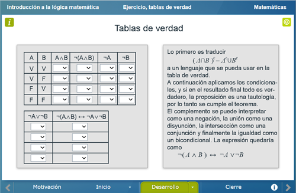

Introducción a la lógica matemática
Introducción a la lógica matemática
 Introducción a la lógica matemática
Introducción a la lógica matemática
Licenciatura: Matemáticas
Que el alumno conozca el lenguaje de la Lógica matemática, y que note la utilidad de las tablas de verdad para demostrar teoremas matemáticos o para dar solución a diversos problemas.
En el inicio de la unidad se muestra un video donde se explica lo que es la lógica y lo que esta tiene que ver con las matemáticas.
El contenido de este apartado trata sobre la explicación de lo que es el lenguaje lógico y cómo este se utiliza en procesos matematicos.

En este apartado se trabaja con el usuario para que deduzca cómo son las tablas de verdad aplicadas a los conectivos lógicos. Se explica cómo se hace una demostración matemática a través de las tablas de verdad y se pone un ejemplo demostrativo. Finalmente se le presenta al usuario un conjunto de ejercicios que tendrá que resolver.

Finalmente se muestra al usuario el proceso de una demostración por contrarrecíproco, y se muestra por qué tiene validez en las demostraciones.
| Diseño del contenido | Víctor Hugo García Jarillo (Facultad de Ciencias UNAM, LITE) |
| Diseño funcional | Víctor Hugo García Jarillo (Facultad de Ciencias UNAM, LITE) |
| Programación | Víctor Hugo García Jarillo (Facultad de Ciencias UNAM, LITE) |
| Diseño gráfico | Ricardo López Gómez |
| Coordinación | Leticia Montserrat Vargas Rocha |
| Diseño funcional | Victor Hugo García Jarillo (Facultad de Ciencias, UNAM) |
| Programación | Victor Hugo García Jarillo (Facultad de Ciencias, UNAM) |
| Diseño gráfico | Francisco Varela Fuentes |
| Coordinación | Leticia Montserrat Vargas Rocha |
| Desarrollo del contenedor | Oscar Escamilla González |
Los contenidos de esta unidad didáctica interactiva están bajo una licencia Creative Commons Reconocimiento-NoComercial-CompartirIgual.
La unidad didáctica fue creada con Arquímedes, una herramienta de código abierto.
La unidad didáctica contiene escenas elaboradas con Descartes, una herramienta de código abierto.
LITE - UnADM 2014